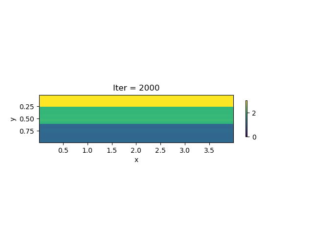
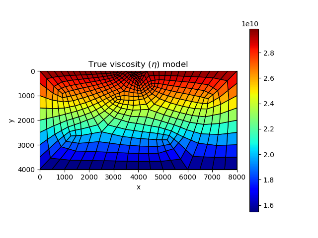
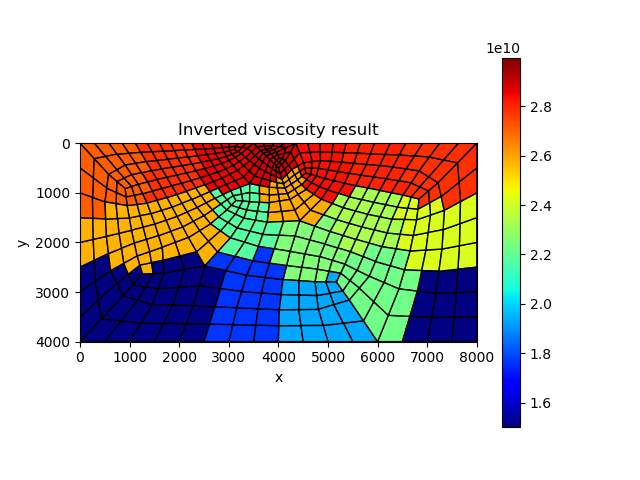

Viscoelasticity Model for the Earth
In previous section, we show how to conduct forward computation of viscoelasticity models for the earth. In this section, we use a gradient-based optimization (L-BFGS-S) approach for calibrating the spatial-varying viscoelasticity parameters for the viscoelasticity model. The major function we use is ViscoelasticitySolver in NNFEM in the NNFEM package.
In the following examples, we calibrate the viscoelasticity parameters $\eta$ from displacement data on the surface.
Strike-slip Fault
In this example, we consider a layer model. In each layer, $\eta$ is a constant. The left panel in the following graph shows the ground truth, while the inversion result is shown in the right panel. We can see the inverted $\eta$ is quite accurate after 2000 iterations.
| True model | Inverted result |
|---|---|
 |  |
We show the inversion results in each iteration:
Code: antiplaneviscosityinverse.jl
Dip-slip Fault
In this example, we consider a linear viscosity model with an increasing viscosity effect at a deeper depth. Because of the limited observation data (displacement on the surface), we do not expect to calibrate a spatially-varying $\eta$ for each location. Therefore, we reduce the number of optimizable variables b dividing the computational domain into multiple patches. The patch is obtained using K-means algorithm provided by Clustering.jl:
The true vsicoelasticity parameter distribution is shown in the left panel in the following graph. The right panel shows the inverted result after 200 iterations. We can see that the inverted result is reasonably good.
| True model | Inverted result |
|---|---|
|  |  |
We also show the inversion results in each iteration:

Code: dippingfaultviscosityforward.jl, dippingfaultviscosityinversion.jl, loaddomainfunction.jl.